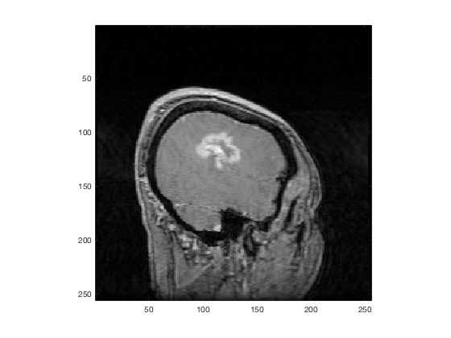
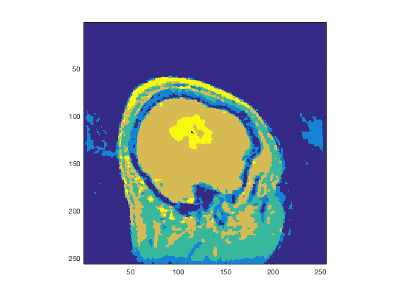
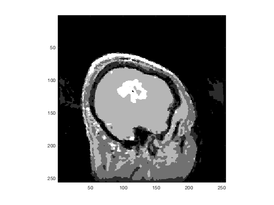
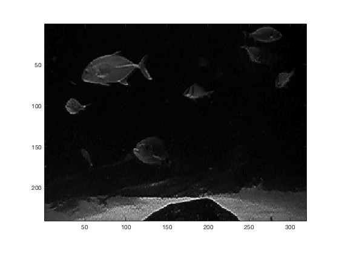
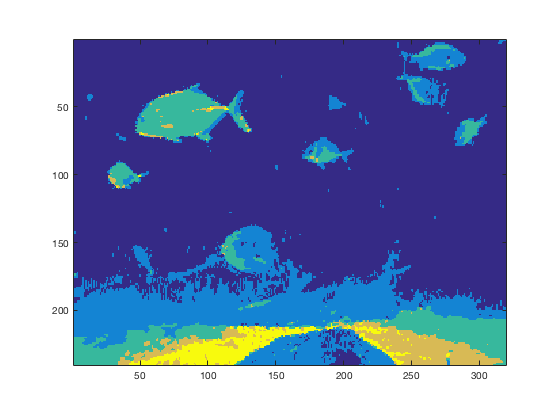
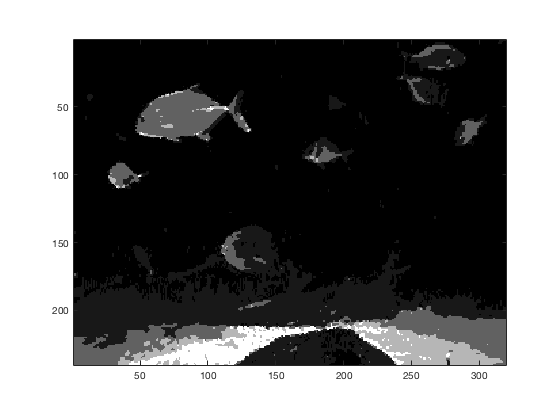

%================================ segmentB =============================== % % script segmentB % % % This is a Matlab script that will run the Bayesian relaxation % for segmenting an image. You should select two images from the % homework Matlab file and perform segmentation on them. % % This code uses some Matlab tricks to be somewhat generic. First, % all arguments are encapsulated into a cell array. This works as % follows. The cell array belows consists of two arguments: % % >> sampleCellArray = {40, 34}; % % that when expanded as an argument to a function, provides two % inputs to the function, % % >> plus( sampleCellArray{:} ) % % The output should be the addition of the two arguments: % % ans = % % 74 % % Anyhow, this function expectes the same, but the arguments are % consistent with what the segKmeans function expects. % %================================ segmentB =============================== close all load('segment.mat'); picks = [1 2]; for i = 1:length(picks) switch (picks(i)) case 1, images{i} = westin; iparms{i} = { 10 , [3, 10, 60, 140, 150], 1 }; case 2, images{i} = fish04; iparms{i} = { 10 , [1, 5 ,40, 80, 120], 1 }; end end for i = 1:length(images) [segimg{i}, K, nmeans{i}] = segBayes(double(images{i}), iparms{i}{:}); figure(3*i-2); imagesc(images{i}); colormap('gray'); axis('image'); figure(3*i-1); imagesc(segimg{i}); colormap('default'); axis('image'); figure(3*i); imagesc(K); colormap('gray'); axis('image'); nmeans{i} end % %================================ segmentB ===============================
ans =
7.3487 35.7866 79.4104 121.9027 169.7822
ans =
5.2687 15.5242 45.8232 80.0602 111.4166
     